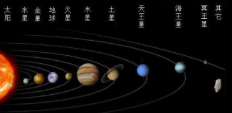
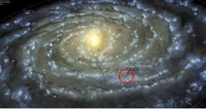
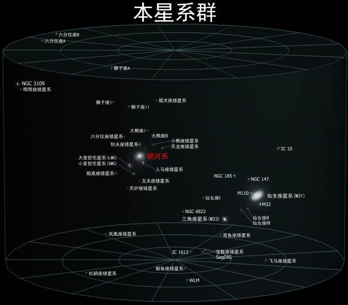
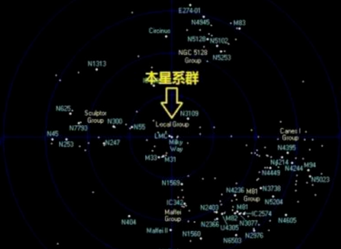
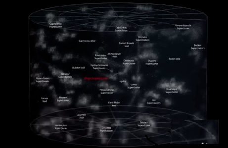
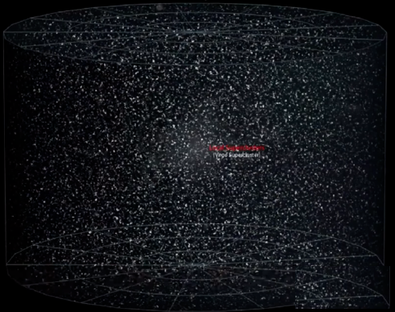

“世界那么大，我看去看看！”--这是之前网络上流行的一句话。如果看完世界还不过瘾，那么今天我们一起来看看宇宙到底有多大！
从古至今，星空对于人类来说都是神秘未知空间。古代的先贤们通过夜观星象，初步涉及到了宇宙的一些奥秘；随着科技的进步，现在的人类更是可以在月球上漫步。
那以现在人类的科技水平，探测到的宇宙到底有多大呢？可以说大到超乎你的想象。你可以类比一下，地球就是一粒沙子，而宇宙就是地球（记住这仅仅是目前被观测到的宇宙）。
好了，废话不多说，接下来，由近及远，一层层来接开宇宙神秘的面纱！
地球是我们生存的家园，但随着科技的进步地球是“越来越小了”。地球也再也阻挡不了人类的探索宇宙的步伐，让我们冲出地球，走向宇宙吧！
太阳系有8大行星（原来有9大，后来冥王星被降级为矮行星了），从大到小排列为：木星，土星，海王星，天王星，地球，金星，火星，水星。还不错我们生存的地球不仅挤入了8大行星之列，而且还排名第5。

把地球放到银河系中一比，大家看到下图上那个红色的小框了吗？你猜得不错，那一个小点就是地球。由此可见，我们的家园在银河系中根本就是一个微不足道小球。 
然而巨大无比的银河系在所属的本星系群中也排不上号。在这里我们已经肉眼看到不地球在何方了。 本星系群是大约由50个不同星系组成的星系群，直径距离大约是一千万光年。 
我们再把眼光放远一点，来看看室女座超星系群。从下面的图中你可以看到，本星系群在这里也算不得什么。因为这里甚少还有其它100个星系群。而室女座超星系群的直径是1亿1千万光年。 
再继续把视野放宽，再来看看蓝天超星系群。它的直径是5亿2千万光年。这里就是我们所在星系的家，同样也是另外10万个星系的家。

到这里还没有结束，我们还可以继续。看到下面这张图了吗？它是我们目前能观测到的宇宙。有红字的部分就是我们所处的室女座超星系群。在密密麻麻的其它超星系群里，它不过也是沧海一粟。 可观测宇宙中包含了至少2万亿了星系。数量之多，甚至超过了地球上沙子的数量。它的边长大约为930亿光年。 
-
看到这里，是不是会感叹和宇宙相比自己是多么的渺小！哪怕是学会了孙悟空的筋斗云，一个筋斗10万8千里，如果想要到达宇宙的尽头，估计不累死也得晕死。
而大家要记住这仅仅是可观测到的宇宙，在可观测之外，也许还有更广袤的无限空间。
引起的思考
- 在这么广袤无垠的宇宙空间中真的没有生命体存在吗？
- 地球漫长的演化过程中，我们真的是出现的第一个文明时代吗？
- 既然我们是这么的渺小，我们的一生是那么的短暂，所以我们不要为一些鸡毛小事斤斤计较，更应该把精力放在有意义的事情上，让我们的生活更加丰富多彩。